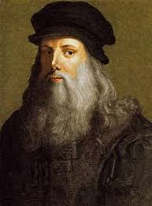
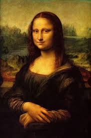
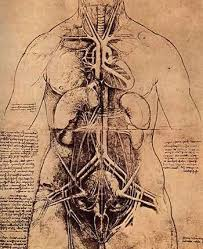
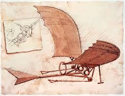
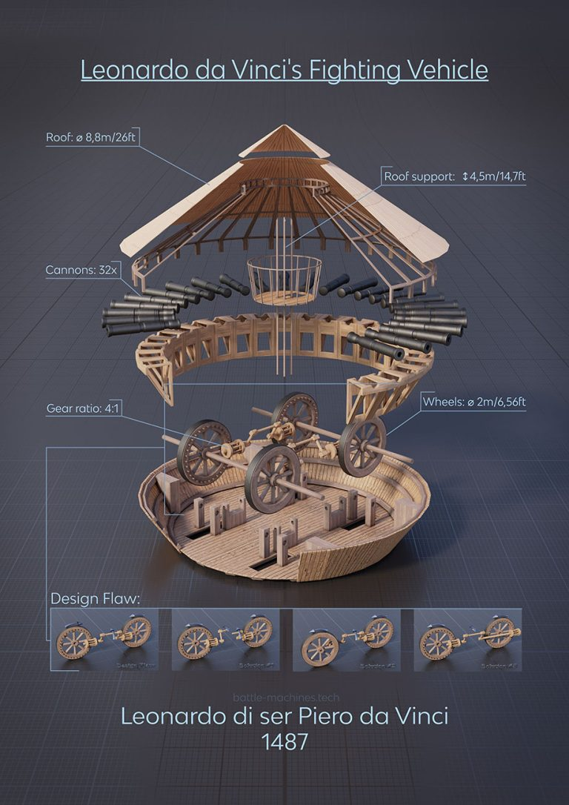

Leonardo da Vinci's work transcended the boundaries of art and science, and his curiosity and meticulous attention to detail set him apart as a true Renaissance man. His sketches, scientific treatises, and inventions continue to inspire artists, scientists, and engineers to this day. Many of his ideas were ahead of their time, and he is regarded as one of the most influential figures in history.

Art
"Mona Lisa": Arguably his most famous painting, it is known for the subject's mysterious smile and the
use of sfumato (a technique of blending colors and tones seamlessly).

"The Last Supper": A masterpiece that depicts the moment when Jesus announces one of his disciples will
betray him. It’s one of the most studied and influential works in the history of Western art.
"Vitruvian Man": This iconic drawing combines art and science, showing the proportions of the human body
based on the writings of the ancient Roman architect Vitruvius. It symbolizes the ideal human form and
Leonardo’s understanding of human anatomy.
Science and Anatomy
Anatomy: Leonardo performed detailed dissections of human bodies, producing some of the most accurate
and
detailed drawings of human anatomy at the time. His sketches of the heart, muscles, and skeleton were
ahead
of his time and helped lay the foundation for modern anatomy.

Biology: He studied the flow of water, the flight of birds, and the growth of plants. His observations
of
nature were meticulous, and his detailed sketches are still studied today.
Mechanical Engineering: Leonardo designed numerous machines, many of which were never built in his
lifetime
but were groundbreaking in their creativity. These include designs for flying machines, a mechanical
knight,
and an early version of a tank.
Engineering and Inventions
Flying Machines: Da Vinci is often credited with designing early concepts of flying machines, including
the famous "ornithopter" (a device designed to fly by flapping wings). Although never built, his designs
influenced later aviation pioneers.

Military Engineering: Leonardo designed various military machines, such as armored tanks, a machine gun
prototype, and a bridge design, many of which were never realized in his lifetime.

Hydraulic Engineering: He designed machines for moving water, including canals and a water-raising
device, demonstrating his deep understanding of fluid mechanics.
Architectural Contributions
Da Vinci contributed to the design of various architectural projects, including fortifications, bridges, and
public buildings. His plans for a city were ahead of their time, incorporating ideas of sanitation, water
systems, and aesthetic harmony.
Botanical Studies
Da Vinci also had a keen interest in botany and produced detailed studies of plants, observing their growth
patterns, structures, and how they interacted with their environments. His work contributed to the
understanding of plant biology.